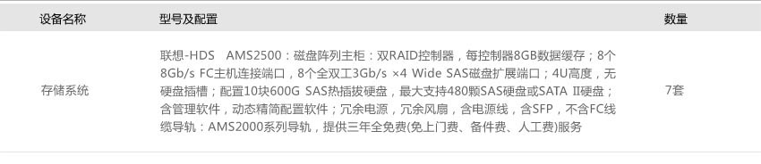

税收作为国家财政收入的主要来源和国家实施宏观调控的重要经济杠杆，国民经济中的地位和作用日益重要，也越来越受到广大纳税人和社会各界的普遍关注。为了配合不断增长的业务需求，缓解税收系统的各项压力，福建国税加大了信息化方面建设的投入，升级与更换了原有系统中的硬件平台。
福建国税局最近针对征管档案管理难度大、档案信息应用率低等问题，研发了“一户式”税收征管档案管理系统。该系统不仅能增强了国税征管档案管理能力，同时税务干部纳税服务时也多了一个 “数字化助手”。
税收征管档案是税务机关在征管过程中形成的工作文件，它详尽地记载着税务机关征管和服务的整个过程和结果。但是，征管档案的管理和利用却不是一件简单的事。由于日积月累，福建国税很多档案室内档案材料堆积如山，需要花费大量人力物力进行管理。在日常征管工作中，纸质档案还显现出了信息查询速度慢，数据利用率低等问题，直接影响了该局税收征管和纳税服务水平的提高。
同时，纸质档案资料难以共享，在纳税服务过程中，纳税人的办税资料往往需要多次向税务机关报送；而税收征管过程中开展纳税评估、税务稽查、行政复议等工作时，也都需要精确的档案数据信息作支撑。如果相关档案资料遗失，则工作的正常开展就会受到影响。
为解决这些问题，提高档案管理和应用水平，适应税源专业化管理的需要，福建国税部署新的征管档案管理系统。新电子档案管理系统应用了电子影像技术，可以通过人工扫描、图像存贮的方式收集纳税人资料信息，实行纳税人“一户式”档案资料存储和管理。
国税新电子档案管理系统很好的解决当前电子档案存储和使用存在等诸多问题，整个系统架构还需要集中、先进、稳定可靠的底层存储中心。
方案推荐使用联想-HDS AMS2500高端存储承载福建国税电子档案管理系统底层存储，满足福建国税电子档案存储、集中管理、按需分享等系统需要。AMS2500以模块化的架构、经济高效地设计，具备如下关键特征很好的支撑了福建国税电子档案管理系统：
AMS2500存储是联想和HDS强强联合推出的中高端存储，具备领先的设计和架构：
AMS2500磁盘存储系统是业界第一款被应用“对称双活(Symmetric Active-Active)控制器”架构的磁盘存储产品，彻底改变原有中端磁盘存储产品在双控制器上割裂式的访问带来的弊端。透过控制器间的互联总线的数据传输，实现了控制器之间、端口之间的路径冗余、负载均衡、故障切换；对后端磁盘的访问实现逻辑卷(LU)对控制器分配的自均衡，当一个控制器繁忙时，存储系统的管理软件可智能地将I/O请求自动分配到另一个空闲的控制器处理。
下图是传统的“非对称双活(Asymmetric Active-Active)控制器”架构和AMS2500的“对称双活 (Symmetric Active-Active)控制器”架构的工作原理及效果的简单示意：
通过数据缓存分区技术，AMS2500可以针对不同电子档案业务的I/O特性调整的数据缓存的段的大小设定，进而大大提高数据缓存的存储效率和访问命中率，最终加速应用性能。
此次项目服务器硬件配置如下：
福建国税局通过使用7套联想-HDS AMS2500搭建国税电子档案管理系统底层数据中心，很好的满足了电子档案管理系统对数据存储、数据共享、数据管理、数据扩展的需要。Lenovo-HDS AMS2500存储系统承袭多项高端企业级存储产品的先进架构，应用多项领先的技术设计，构建可靠、高效、易用的存储平台，为福建国税提供了一个稳定、可靠、可持续发展的系统平台，提高了税务电子档案管理业务的运行效率，还为今后的业务发展打下了良好的基础，同时也为福建国税提高了整体硬件平台的利用率，节省了硬件投入以及维护运营成本。